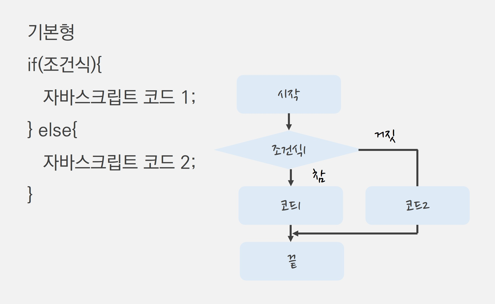
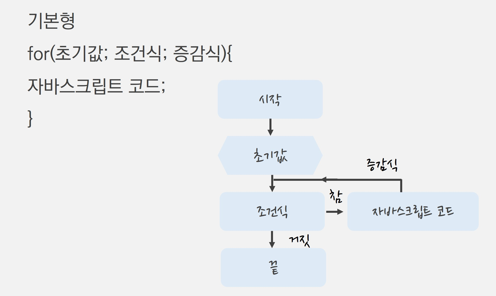

제어문
1. 제어문이란?
-
프로그램의 흐름을 제어할 수 있도록 도와주는 문장
-
조건문(if문 / else문 / else if문)
- 조건에 따라 특정 코드를 실행
-
선택문(switch문)
- 일치하는 경우의 값이 있을 경우에만 특정 코드를 실행
-
반복문(while문 / for문)
- 코드를 지정한 횟수만큼 반복해서 실행
-
2. 조건문
-
if문
-
조건식의 값이 참(true)인지 거짓(false)인지에 따라 자바스크립트 코드를 제어
-
if문은 조건식을 만족할 경우에만 코드를 실행

예제 코드 보기/숨기기(클릭)
let num = 10; if(num < 500){ document.write("hello"); }
-
방문자로부터 걸음 수를 입력 받고, 걸음 수가 10,000보 이상일 경우에만 결과를 출력하도록 작성해 봅시다.
- 방문자 걸음 수를 입력 받기 위해 prompt() 메서드 사용
- 10,000보 이상일 경우 "매우 좋은 습관을 지니고 계시는군요!!" 출력
정답 코드 보기/숨기기(클릭)
let walkAccount = prompt("당신의 하루 걷는 양은 몇 보인가요?", "0"); if(walkAccount >= 10000){ document.write("매우 좋은 습관을 지니고 계시는군요!!"); }
-
방문자로부터 하루 통화량을 입력 받고, 60분 이상일 경우에만 결과를 출력하도록 작성해 봅시다.
- 방문자 하루 통화량을 입력 받기 위해 prompt() 메서드 사용
- 60분 이상일 경우 "많이 사용하는 편이네요" 출력
정답 코드 보기/숨기기(클릭)
let callTime = prompt("당신의 하루 통화량은 얼마인가요?", "0"); if(callTime >= 60){ document.write("많이 사용하는 편이네요!!"); }
-
-
else문
-
조건식을 만족할 경우(true)와 만족하지 않을 경우(false)에 따라 실행되는 코드가 달라짐

예제 코드 보기/숨기기(클릭)
let age = prompt("나이를 입력하세요"); if(age >= 20){ document.write("성인입니다"); } else{ document.write("미성년자입니다"); }
-
방문자에게 질의응답 창으로 좋아하는 숫자를 입력 받고 입력된 값이 짝수인지, 홀수인지에 따라 출력되는 결과가 다르게 나타나도록 작성해 봅시다.
정답 코드 보기/숨기기(클릭)
let num = prompt("당신이 좋아하는 숫자를 입력하세요"); if(num % 2 == 0){ document.write("당신이 좋아하는 숫자는 짝수입니다"); } else{ document.write("당신이 좋아하는 숫자는 홀수입니다"); }
-
웹 페이지에서 회원 탈퇴 여부를 묻는 확인/취소 창이 나타나게 나고, else 조건문으로 사용자가 [확인] 버튼을 눌렀을 때와 [취소] 버튼을 눌렀을 때 결과 화면이 다르게 나타나도록 작성해 봅시다.
- confirm() 메서드는 확인과 취소 버튼을 가지는 메시지 상자로 [확인] 버튼을 누르면 true를 반환하고, [취소] 버튼을 누르면 false를 반환
- 기본형:
confirm("질문내용");
- 기본형:
정답 코드 보기/숨기기(클릭)
let result = confirm("정말로 회원을 탈퇴하시겠습니다?"); if(result){ document.write("탈퇴 처리되었습니다"); } else{ document.write("탈퇴 취소되었습니다"); } - confirm() 메서드는 확인과 취소 버튼을 가지는 메시지 상자로 [확인] 버튼을 누르면 true를 반환하고, [취소] 버튼을 누르면 false를 반환
-
-
else if문
-
두 가지 이상의 조건식과 정해 놓은 조건을 만족하지 않았을 때 실행되는 코드

예제 코드 보기/숨기기(클릭)
let score = prompt("점수를 입력하세요"); if(score >= 90){ document.write("A등급 입니다"); } else if(score >= 80) { document.write("B등급 입니다"); } else if(score >= 70) { document.write("C등급 입니다"); } else{ document.write("D등급 입니다"); }
-
방문자에게 현재 몇 월인지를 입력 받고 입력된 월에 해당되는 계절이 출력되도록 작성해 봅시다.
- 봄(3 ~ 5월): "봄!! 벗꽃보러 가요!!" 라는 메세지 출력
- 여름(6 ~ 8월): "여름!! 떠나요~ 둘이서!!" 라는 메세지 출력
- 가을(9 ~ 11월): "가을!! 식욕 대폭발!!" 라는 메시지 출력
- 겨울(12 ~ 2월): "겨울!! 나는 눈의 여왕!!" 라는 메세지 출력
정답 코드 보기/숨기기(클릭)
let mon = prompt("현재는 몇 월입니까?", ""); if (mon >= 3 && mon <= 5){ document.write("봄!! 벗꽃보러 가요!!"); } else if (mon >= 6 && mon <= 8){ document.write("여름!! 떠나요~ 둘이서!!"); } else if (mon >= 9 && mon <= 11){ document.write("가을!! 식욕 대폭발!!"); } else { document.write("겨울!! 나는 눈의 여왕!!"); }
-
방문자에게 현재 몇 시인지를 입력 받고 입력된 시간에 맞게 메세지가 출력되도록 작성해 봅시다.
- 아침(7 ~ 8시): "아침 먹을 시간이에요." 라는 메세지 출력
- 점심(12 ~ 13시): "점심 먹을 시간이에요" 라는 메세지 출력
- 저녁(18 ~ 20시): "저녁 먹을 시간이에요" 라는 메시지 출력
- 아침, 점심, 저녁 시간이 아니면 "오늘도 고생하셨어요" 라는 메세지 출력
정답 코드 보기/숨기기(클릭)
let time = prompt("현재는 몇 시입니까?", ""); if (time >= 7 && time <= 8){ document.write("아침 먹을 시간이에요"); } else if (time >= 12 && time <= 13){ document.write("점심 먹을 시간이에요"); } else if (time >= 18 && time <= 20){ document.write("저녁 먹을 시간이에요"); } else { document.write("오늘도 고생하셨어요"); }
-
3. 반복문
-
for문
-
조건식을 만족할 때까지 특정 코드를 반복하여 실행

예제 코드 보기/숨기기(클릭)
for(i = 1; i <= 10; i++){ document.write("안녕하세요" + i, "<br>"); }
-
while문과 사용 방법은 같지만 while문보다 사용하기 편해 사용 빈도가 높은 편임
예제 코드 보기/숨기기(클릭)
let i = 1; while(i <= 10){ document.write("안녕하세요" + i, "<br>"); i++; }
-
방문자가 입력한 횟수만큼 경고창을 띄우는 예제를 만들어 봅시다.
alert()메서드는 경고창을 띄우고 데이터를 보여줌
예제 코드 보기/숨기기(클릭)
const count = prompt("경고창을 몇 번 띄울까요?", ""); for(let i = 1; i <= count; i++){ alert(i + "번째 메세지입니다!"); }
-
방문자로부터 구구단의 단수를 입력 받아 화면에 구구단을 출력하도록 작성해 붑시다.
예제 코드 보기/숨기기(클릭)
let num = prompt("출력할 구구단 단수를 입력하세요", "1"); let i = 1; document.write("for문을 이용한 출력", "<br>"); for(i = 1; i < 10; i++){ document.write(num + "*" + i + "=" + (num * i) + "<br>"); }
-